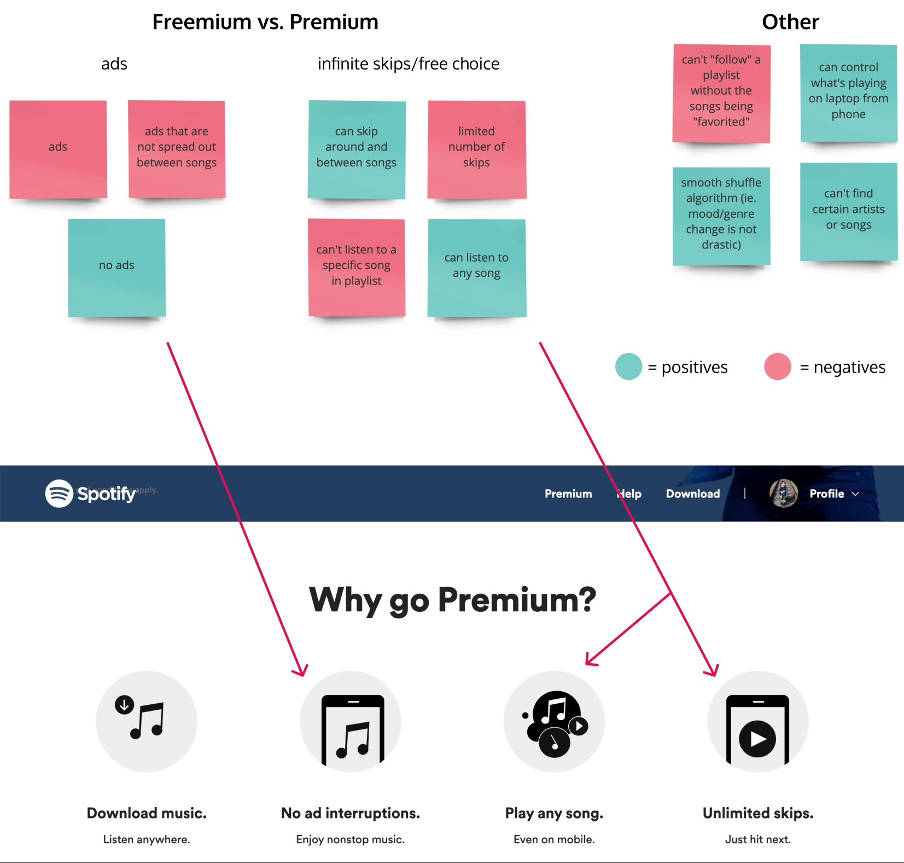
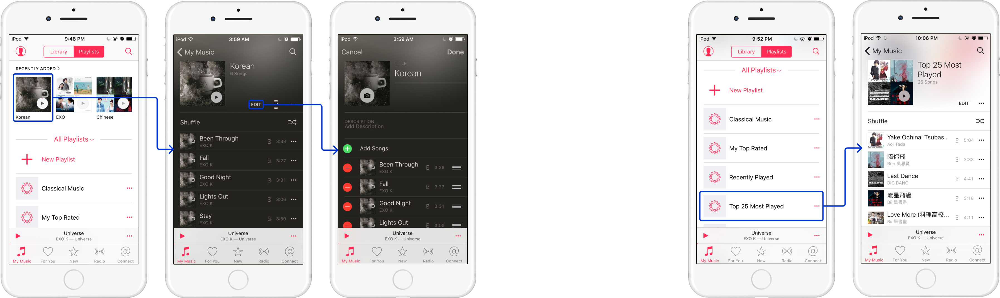
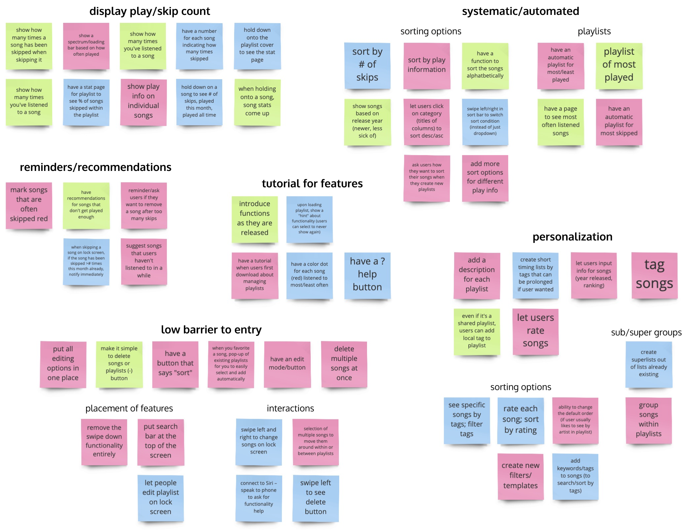
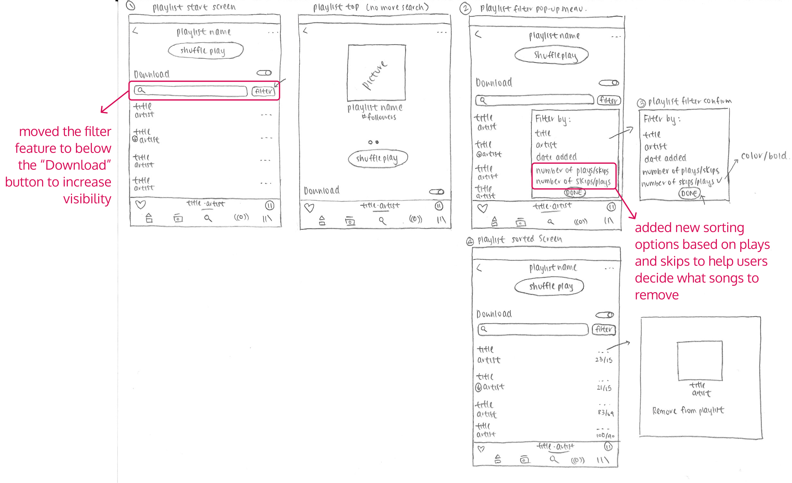
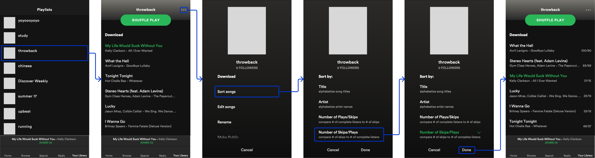
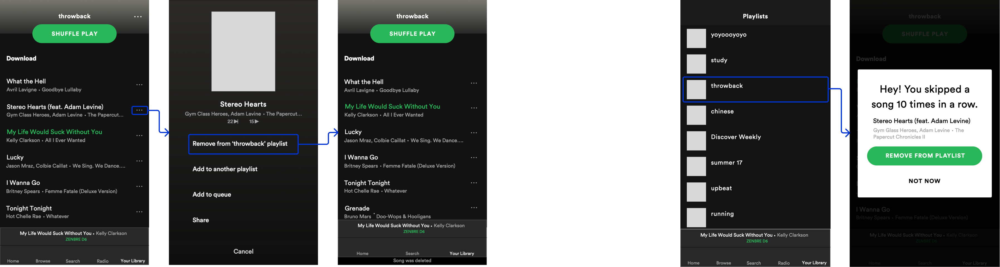
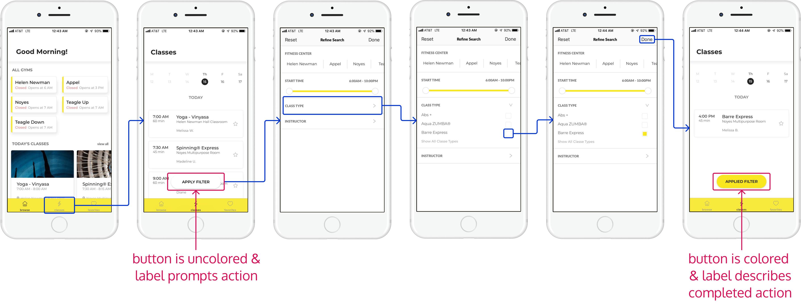
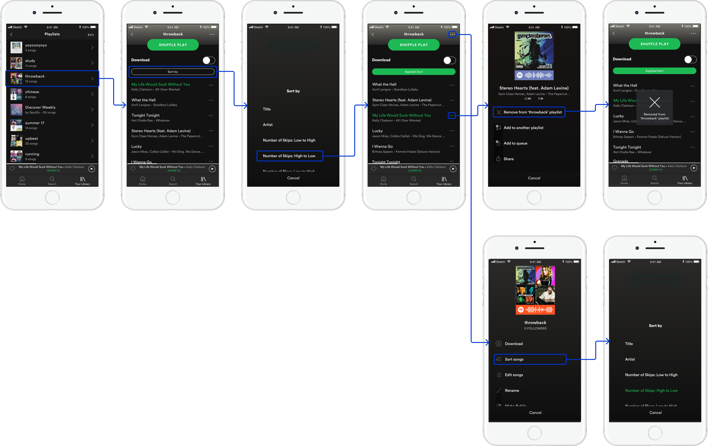

iOS Product Designer
myself
September 2018 – December 2018
I conducted this semester-long case study for the student-led course Introduction to Digital Product Design at Cornell University in the Fall of 2018. Even though I was already a senior at the time, this was my first real case study and introduction to product design.
I chose to redesign Spotify because I really loved how much it had transformed my own streaming experience and wanted to make it even better for other users, if possible. Throughout my case study, I followed the Double Diamond methodology.
Edit: In 2020, Spotify released a feature for Premium users to "Hide Song". While this is not the same approach to my people problem, it shows how real my people problem was/is and the value in resolving it.
To get a better understanding of how users generally felt about using Spotify's mobile app, I first conducted a few contextual inquiry interviews with both Freemium and Premium users. I asked some basic questions like when and how often they used Spotify and what they were most satisfied and frustrated by.
It wasn't long before I noticed a trend – the majority of my Freemium users were most frustrated with features that Premium solves while Premium users were most satisfied by those very solutions.
Because I was limited on time and because more than half of my initial interviewees kept referring to the same features, I decided that conversing with premium users would better enable me to find pain points in the Spotify experience that were not already resolved.
With my newer and narrower set of users, I dove deeper into my questions and focused specifically on their experiences with organizing their music.
I observed a unique problem with the use of personal playlists.
existing filter and sort features are not immediately visible in playlist screen
I don't want to spend so much time going through my entire playlist to see which songs I should clean out; and
I didn't know that Spotify has a built-in sorting feature to potentially help with this.”
I looked into other music streaming apps like Tidal, Google Music, and iTunes and Apple Music and was surprised to find that none of them readily allowed users to better organize and maintain the songs in their playlists either.
This might be because most mobile users are on-the-go and seem unlikely to be cleaning out songs.

[left] iTunes’s edit feature on mobile app offers manual ordering ability
[right] iTunes’s curated playlist relies on plays per song (numbers not shown in mobile app)
Musi's edit feature offers one pre-determined ordering algorithm
However, because Spotify users actually use the mobile app a lot, even to the point of controlling their music on multiple devices at a time, and because sorting songs is a feature already available on both mobile and desktop apps, I believed that this people problem was still valid and pretty feasible to resolve. And if the people problem is solved, then users can easily clean out songs while on-the-go if they wanted to.
To begin thinking of possible solutions, I asked three of my friends to join me in a collaborative brainstorm session so that we can bounce ideas off of one another.
We first engaged in a series of How-Might-We's to identify potential opportunity areas to tackle. From there, we identified different solution spaces as well, as shown below.
I noticed that a lot of the ideas we came up with relied on two things:
Based on this observation, I decided to make the existing sorting functionality more visible so that users can sort playlists by the number of times a song has been played or skipped.
I liked this solution idea because it:
My initial sketch thus included potential changes in Spotify's mobile interface that can help users easily compare songs in their playlists and decide on which ones to remove.
moved filter to increase visibility and added sort options based on plays and skips
As I translated my sketch to a higher fidelity prototype for usability testing, I:
entry point #1: highly visible sort button
I wanted to explore different entry points because one of the main aspects of my people problem was that users were unable to find the existing sorting functionality.
I ended up creating a few prototypes that relied on feature ideas I rejected earlier.
entry point #2: less visible but common playlist options button
entry point #3: automatically curated "Recently Skipped" playlist
I also explored a few flows for removing the sick-of songs that the sorting feature helps users find.

[left] user flow #1: remove song through song options button
[right] user flow #2: remove song through pop-up
I recruited a few users to test my prototypes.
Everyone seemed to find my sorting feature intriguing because they (once again) did not know that Spotify already has its own sorting feature.
My users were also all able to easily find the different entry points for sorting, which was one of my main goals.
My users pointed out, however, that:
I also got feedback that the sorting arrows were not really intuitive.
In my iteration process, I first narrowed down on using the sort button and the ellipses button as my entry points.
For both the sorting user flow and the deleting user flow, my users didn't seem to like the last entry points as much.
I then moved all the numbers from the playlist screen to the individual song pages. This way, the playlist screen was less clustered but users could still view the numbers if they wanted to.
I also changed “number of plays/skips” and “number of skips/plays” to “number of plays” and “number of skips” so that the feature was more intuitive.
I then spent some time looking at non-music streaming apps for more visual design inspiration on sorting and filtering.
Specifically, I wanted to see how other apps provide feedback on whether or not a list of items is sorted and in what order.
I was inspired by Uplift and Amazon.
Uplift's color and label of filter button can both prompt action and give simple feedback on action
Amazon's sorting option is explicit about sorting order
My final interaction flow thus allows users to sort a personal playlist by clicking either the “Sort by” button or the playlist options “…” button. After sorting, they can click into a specific song to see its statistics and remove it from the current playlist.
This interaction flow solves my people problem because it gives users control in organizing and maintaining their personal playlists. Specifically, it takes advantage of Spotify’s existing feature and improves on it so that users no longer need to spend a lot of time to see which songs they should remove from their personal playlists.
final flow: "Sort by" or "..." button –> sort –> remove song
Looking back, I know that there are a ton of solution spaces that I would have loved to explore given more time, user research, and feedback from both users and other designers.
Still, I am really proud of this case study because it introduced me to the joy and value of product design; I especially loved brainstorming with my friends and thinking of different entry points for my design solution.
To become a designer and work in a team with other designers (and engineers and product managers and writers and researchers) would truly be a dream come true 💜.